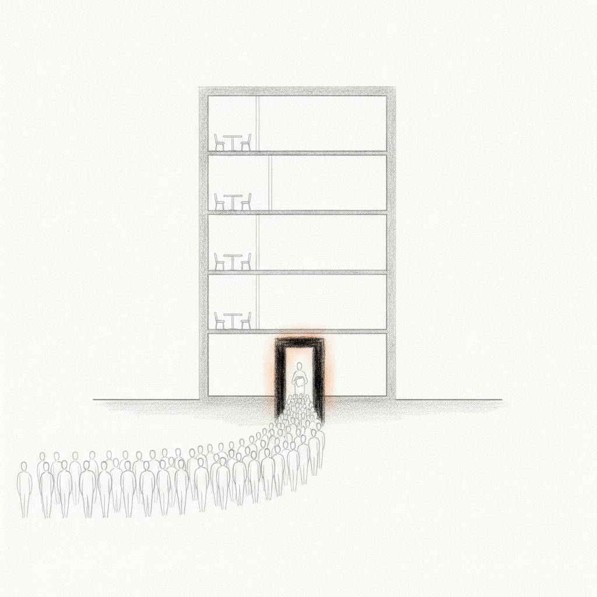

Drafted: 2026-06-19
OS Pillar: Operating Model OS
Quarterly Theme: The Machine
Subject: Por qué sus próximas veinte contrataciones se parecerán a las últimas
Preheader: Cuando el dueño es el único filtro de contratación, el equipo se angosta con el tiempo.
Resumen del Insight: El dueño que entrevista a cada candidato cree que protege la calidad. En realidad se volvió el cuello de botella: el mismo instinto que construyó la empresa hoy le impide escalar.
Esta semana las señales apuntan a una pregunta: qué queda del negocio cuando el fundador deja de ser el sistema.
La contratación más cara en una mediana empresa sigue siendo la que el dueño hace en solitario. No porque elija mal. La mayoría elige bien, y por eso el negocio existe. El costo está en lo que la decisión aislada deja codificado. Cada contratación refleja criterios que viven únicamente en la cabeza del fundador. El equipo no puede replicar lo que nunca ha visto. Las siguientes veinte contrataciones se estrechan, no porque el dueño lo quisiera, sino porque el filtro nunca quedó por escrito ni se contrastó con la lectura de alguien más. La cobertura de esta semana sobre capital humano en M&A y sucesión familiar apunta al mismo hueco: el filtro es el fundador, y el fundador es el techo.
Usted contrata por intuición. Funcionó. Cada persona clave de su equipo fue su decisión, y la mayoría resultó la correcta. El negocio existe gracias a ese criterio.
Hoy el equipo es de veinte, cincuenta, doscientas personas. Usted sigue siendo el único que puede decidir si alguien encaja. El mismo patrón que construyó la empresa se convirtió en la restricción que la frena.
La mayoría de los dueños diagnostica esto como un problema de reclutamiento. Contratan a un líder de Recursos Humanos. Compran un ATS. Las decisiones siguen llegando al escritorio del dueño. El nuevo sistema procesa más candidatos en menos tiempo, pero el filtro final no cede.
El diagnóstico real vive en dos lugares. Primero, los criterios de contratación nunca se plasmaron en un documento. Existen en la cabeza del dueño con toda su nitidez, y en ningún otro sitio. El equipo no puede aplicar lo que no puede leer. Segundo, y aquí viene lo incómodo: el instinto que construyó la empresa carga sesgos que el dueño no ha examinado. Las personas que le parecen idóneas tienden a parecerse a quienes funcionaron antes. El equipo se estrecha. La capacidad se concentra. La diversidad de criterio que exige la siguiente fase no llega.
El Operating Model OS lo llama una Regla de Decisión faltante para contratar. Tres piezas. Disparador: el puesto y el momento en que aplica la regla. Prueba: los criterios concretos —habilidades, comportamientos, evidencia— que determinan el ajuste. Frontera: lo que convierte la respuesta en un no, sin importar qué tan bien salió la conversación.
Escribir la regla hace dos cosas a la vez. Le da al equipo algo que aplicar sin usted. Y le muestra, por primera vez, qué ha estado filtrando. Algunos criterios serán de desempeño y deben quedarse. Otros responderán a familiaridad, comodidad o trasfondo compartido. Esos hay que confrontarlos.
Lo más difícil no es escribir la regla. Es querer que otra persona la use. Querer dejar de ser el filtro de contratación es la precondición. Sin eso, usted escribirá la regla y la saltará en cuanto un candidato se siente enfrente. Coincidir en principio no es lo mismo que quererlo de verdad.
Esta semana, escriba la Regla de Decisión para la siguiente vacante. Disparador, prueba, frontera. Entréguesela a alguien del equipo y déjelo filtrar la primera ronda sin usted. Lea sus notas antes de conocer a nadie. La distancia entre su lectura y la de esa persona es el dato. La pregunta que importa no es quién tiene razón. Es qué ha estado filtrando usted sin darse cuenta.
Sección: spotlight
LongRange Capital adquiere Pizza Hut a Yum Brands por 1,500 millones de dólares, unos 26 mil mdp, según el reporte semanal de Middle Market Growth. Yum China Holdings, en paralelo, se queda con el negocio de China continental por 1,200 millones. La cadena llevaba años perdiendo terreno dentro de una corporativa que priorizó Taco Bell y KFC.
La operación parece un evento de financiamiento. En rigor, es un evento de modelo operativo. Yum administraba Pizza Hut como una marca más dentro de un portafolio donde el capital, el talento y las decisiones pasaban por el corporativo. LongRange apuesta a que, al separar la cadena, las decisiones operativas ocurrirán a una velocidad que la estructura matricial no podía sostener.
Esa es la tesis detrás de la mayoría de los take-privates del mercado medio. El producto no está roto. El sistema a su alrededor dejó de escalar, y quienes operaban adentro perdieron autoridad para corregirlo.
Para el dueño mexicano de una empresa mediana, la lectura es directa. Los negocios que se adquieren y se reactivan no son los del producto fallido. Son aquellos cuyo modelo operativo se congeló en las preferencias del fundador, sin nadie con facultades para moverlas.
Metaview - un asistente de IA que graba entrevistas y estructura las notas del candidato conforme a una rúbrica predefinida. Vale la pena considerarlo esta semana porque permite que el equipo de contratación aplique los mismos criterios de evaluación en cada ronda, de manera que la intuición del dueño deje de ser la única señal que importa. Encuéntrelo en metaview.ai.
A vigilar esta semana: cuántas decisiones de contratación o de talento llegan a su escritorio siendo que pudieron resolverse un nivel más abajo. Cuéntelas. Tres o menos indica que su criterio está en un lugar que el equipo puede consultar. Cinco o más indica que la regla vive únicamente en su cabeza, y el equipo sigue esperando que usted sea quien resuelva.
Si algo de este número resonó contigo, respóndeme - leo cada mensaje.
Si le es útil a alguien en tu red, reenvíalo - es el mayor cumplido.
Cuando estés listo para trabajar juntos directamente, así es como empezamos: [link]
Draft generated by the pipeline. Review and edit before sending.